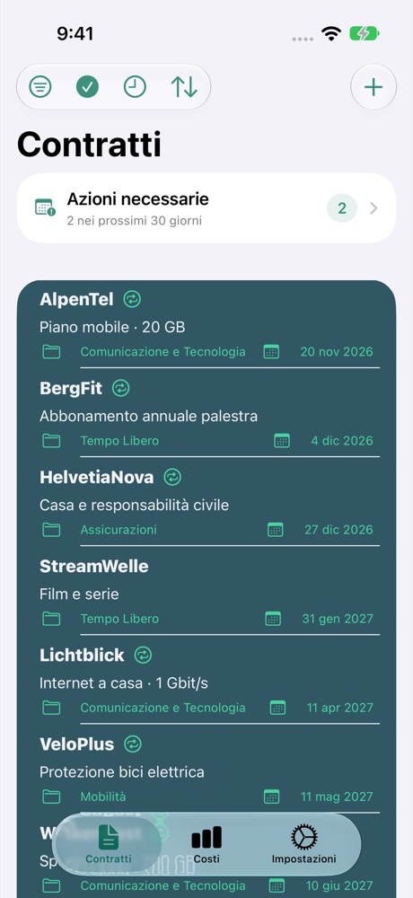
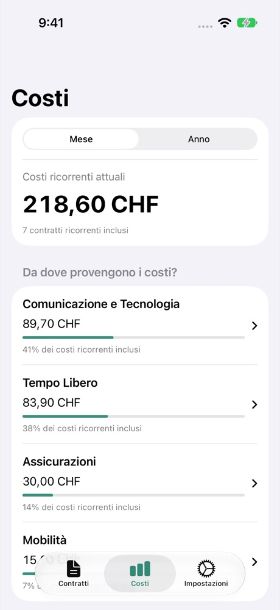

Scadenze sotto controllo
Tieni d’occhio i termini di disdetta e imposta promemoria. Puoi anche aggiungere le date a Calendario e Promemoria.
PER LA VITA QUOTIDIANA
Costi, termini di disdetta e documenti: Contractly mette ordine nei tuoi contratti. Direttamente sul tuo iPhone.
Vedi sull’App StoreFino a 4 contratti gratis · Contratti illimitati con Premium

Tieni d’occhio i termini di disdetta e imposta promemoria. Puoi anche aggiungere le date a Calendario e Promemoria.
Confronta i costi mensili e annuali. Riunisci gli importi in una valuta di visualizzazione comune.
Allega PDF, foto, scansioni e link ai tuoi contratti. Trova i documenti dove ti servono.

CONTRACTLY
Dal piano telefonico alla palestra: visualizza le spese ricorrenti in un’unica panoramica. Gli importi convertiti sono indicativi.
Inserisci fornitore, durata e preavviso.
Registra i costi e allega i documenti.
Controlla le scadenze e imposta promemoria.
Contratti e documenti sono salvati sul tuo dispositivo. Non serve un account Contractly. Alcune funzioni utilizzano servizi esterni.
Il trattamento dei dati in dettaglio →Puoi gestire fino a quattro contratti gratis. Premium elimina questo limite. Prezzo e condizioni attuali sono nell’App Store o nella finestra di acquisto.
Sì. La funzione di backup e ripristino consente di esportare e ripristinare contratti, documenti e impostazioni. I backup esportati non sono crittografati: conservali al sicuro.